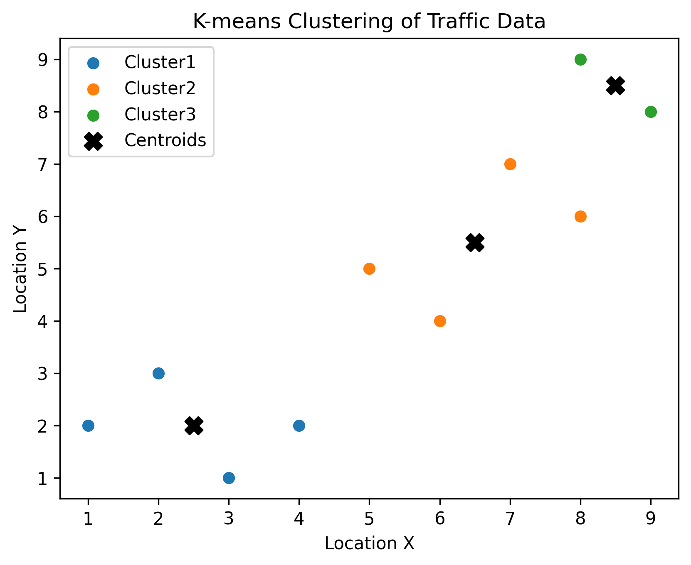
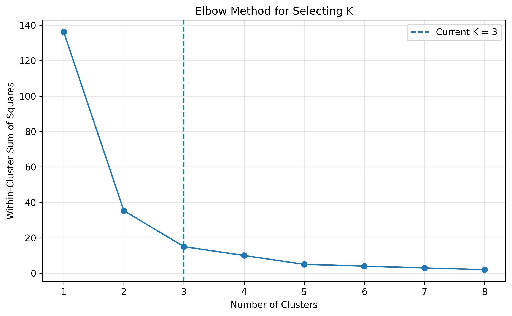
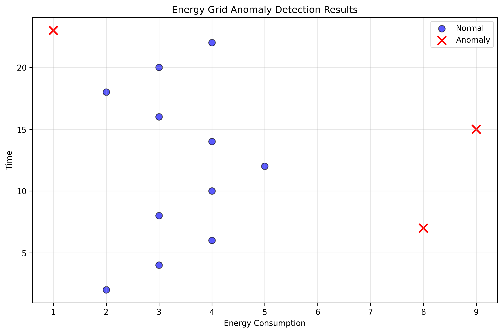
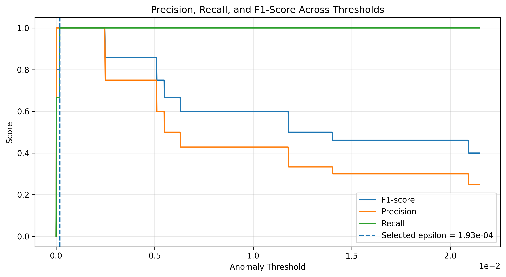

Machine Learning • Anomaly Detection
Smart City Pattern & Anomaly Detection
Clustering traffic patterns and detecting unusual energy-grid behavior with compact machine learning workflows.
This project applies K-means clustering and Gaussian anomaly detection to smart city management data, showing how transportation and energy activity can be grouped, scored, and reviewed for unusual operational patterns.
Project Overview
Smart city systems generate operational data from transportation networks, energy usage, sensors, and infrastructure. This project demonstrates how machine learning can organize traffic behavior into meaningful spatial groups and flag low-probability energy-grid observations for further investigation.
Two-Part Machine Learning Workflow
The project combines two machine learning workflows: clustering traffic patterns and detecting abnormal energy usage. The goal is not to create a production monitoring system, but to demonstrate the core modeling logic behind smart city pattern discovery, anomaly scoring, and threshold-based detection.
Traffic Pattern Clustering
K-means is implemented from scratch by initializing centroids, assigning points to the nearest centroid, recomputing cluster centers, and visualizing traffic groupings.
Energy Grid Anomaly Detection
A Gaussian probability model estimates normal energy behavior, computes probability scores for each observation, selects an F1-optimized threshold, and flags low-probability observations as anomalies.
Traffic Pattern Clustering
The clustering workflow uses K-means to group traffic observations into spatial activity patterns. The resulting clusters show how traffic points separate into distinct zones, while the elbow analysis helps justify the selected number of clusters.


Interpretation
The clustering results show three interpretable traffic activity zones: a lower-activity region in the lower-left area, a middle spatial region, and a higher-location region in the upper-right area. The elbow curve supports K = 3 because most of the compactness improvement occurs by the third cluster, with smaller gains after that point. Although additional clusters may create finer segmentation, three clusters provide a clearer and more practical summary of the traffic patterns in this sample.
Energy Grid Anomaly Detection
The anomaly detection workflow models normal energy-grid behavior using Gaussian probability scores. Observations with unusually low probability are flagged as anomalies, making them candidates for operational review, sensor validation, or equipment monitoring.


Interpretation
The model identified three unusual energy observations while preserving strong separation from normal activity. The threshold tuning curve shows how different epsilon values affect precision, recall, and F1-score, helping justify the final anomaly cutoff rather than selecting it arbitrarily. In a smart city setting, these flagged observations could represent abnormal demand, sensor issues, equipment faults, or events that require further monitoring before operational action is taken.
Role and Implementation
I implemented the clustering and anomaly detection workflow in Python, including the K-means helper functions, Gaussian parameter estimation, threshold selection, visual diagnostics, and project documentation.
Algorithm Implementation
Built the K-means workflow from scratch, including centroid assignment, centroid updates, iteration control, and cluster interpretation.
Anomaly Detection Logic
Estimated Gaussian parameters, computed probability scores, selected a threshold using F1-score, and flagged low-probability observations.
Visualization and Communication
Created diagnostic visuals that explain model behavior, cluster selection, anomaly detection results, and threshold performance.
Tools
Python • NumPy • Pandas • Matplotlib • Jupyter Notebook • GitHub
Artifacts
The project artifacts include the notebook, source code, data workflow, visual outputs, and documentation used to explain the modeling approach.
GitHub Repository
Source repository containing the project notebook, data folder structure, README, and generated visuals.
Open repository →Notebook
Main Jupyter Notebook implementing clustering, Gaussian anomaly detection, threshold tuning, and visualization.
notebooks/smart_city_anomaly_detection.ipynbVisual Outputs
Diagnostic plots for K-Means validation, threshold performance, and detected energy-grid anomalies.
images/projects/smart-city/